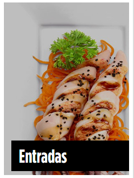
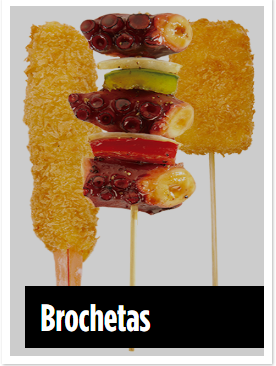
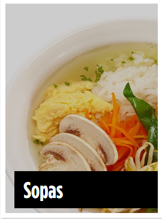
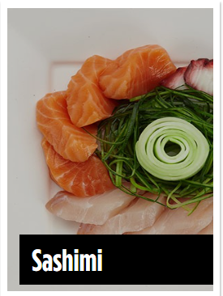

| Filosofía | Misión |
|---|---|
| Sushi Roll es una cadena mexicana de comida japonesa, fundada en el año 1996 con su sede en la Ciudad de México. Sus restaurantes venden platos populares basados en la cocina japonesa, como ramen y sushi. Sushi Roll tiene cinco tipos de formatos de negocio: restaurante, comida rápida, servicio a domicilio, comida para llevar y teppanyaki, pero son prácticamente tres formatos de negocio porque se pueden combinar. | Ser reconocidos como la marca líder en comida japonesa por su excelencia en servicio, innovación y calidad, gracias a nuestros colaboradores y valores institucionales lo que nos perfila a mercados internacionales. |
| Valores | Calidad |
| En Sushi Roll sabemos lo importante que es tener un estilo definido de vida y de actuar, nos apegamos a códigos,reglamentos y principios que rigen nuestro día a día generando así desde nuestro origen una cultura empresarial, la cual es el sello distintivo de la marca identificándonos con los valores de: | Cuidando nuestros procesos, revisándolos y esmerándonos en innovarlos constantemente. |
| Nuestras Instalaciones | |
|
|
|---|
| Menú |  |  |  |  |
 |
|---|